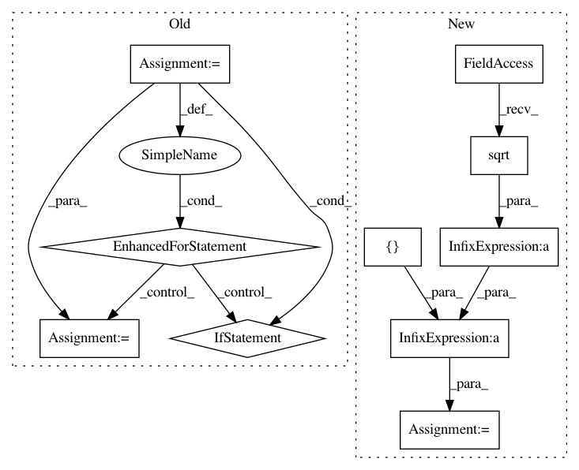

acedbe6cc807610d5495615dea662aac427a7ff5,tests/test_special_orthogonal_group.py,TestSpecialOrthogonalGroupMethods,test_matrix_and_tait_bryan_angles_zyx,#TestSpecialOrthogonalGroupMethods#,1064
Before Change
order = "zyx"
for extrinsic_or_intrinsic in ("extrinsic", "intrinsic"):
for angle_type in self.elements[n]:
point = self.elements[n][angle_type]
if angle_type in self.angles_close_to_pi[n]:
continue
matrix = group.matrix_from_rotation_vector(point)
tait_bryan_angles = group.tait_bryan_angles_from_matrix(
matrix,
extrinsic_or_intrinsic=extrinsic_or_intrinsic,
order=order)
result = group.matrix_from_tait_bryan_angles(
tait_bryan_angles,
extrinsic_or_intrinsic=extrinsic_or_intrinsic,
order=order)
expected = matrix
self.assertTrue(gs.allclose(result, expected),
" for {} Tait-Bryan angles with order {}\n"
"for point {}:\n"
" result = \n{};"
" expected = \n{}.".format(
extrinsic_or_intrinsic,
order,
angle_type,
result,
expected))
def test_rotation_vector_and_rotation_matrix_vectorization(self):
for n in self.n_seq:
group = self.so[n]
After Change
order = "zyx"
for extrinsic_or_intrinsic in ("extrinsic", "intrinsic"):
point = gs.pi / (6 * gs.sqrt(3)) * gs.array([1., 1., 1.])
matrix = group.matrix_from_rotation_vector(point)
tait_bryan_angles = group.tait_bryan_angles_from_matrix(
matrix,
In pattern: SUPERPATTERN
Frequency: 3
Non-data size: 10
Instances
Project Name: geomstats/geomstats
Commit Name: acedbe6cc807610d5495615dea662aac427a7ff5
Time: 2018-07-29
Author: ninamio78@gmail.com
File Name: tests/test_special_orthogonal_group.py
Class Name: TestSpecialOrthogonalGroupMethods
Method Name: test_matrix_and_tait_bryan_angles_zyx
Project Name: bashtage/linearmodels
Commit Name: 34e7e918bd4fc09f643e8bb448e875a9bcb7e841
Time: 2017-03-29
Author: kevin.k.sheppard@gmail.com
File Name: experiment.py
Class Name:
Method Name:
Project Name: geomstats/geomstats
Commit Name: acedbe6cc807610d5495615dea662aac427a7ff5
Time: 2018-07-29
Author: ninamio78@gmail.com
File Name: tests/test_special_orthogonal_group.py
Class Name: TestSpecialOrthogonalGroupMethods
Method Name: test_matrix_and_tait_bryan_angles_xyz